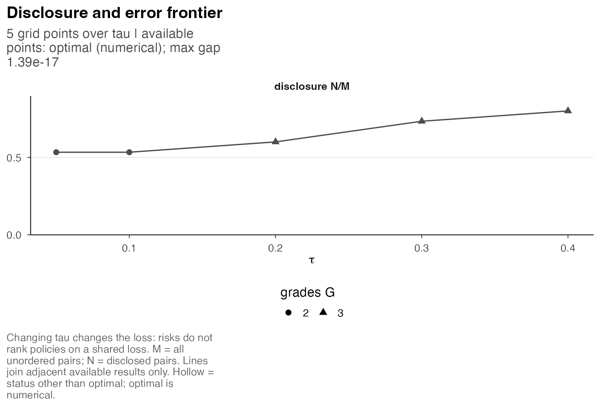

Computing grades, choosing settings, and reading solver bounds
Source:vignettes/m5-computing-grades.Rmd
m5-computing-grades.RmdEvery postrank optimization problem has three distinct
parts:
-
Allowed grade reports—set by
G_max,exact_G, and optional per-criterion error budgetsqinpostrank_settings(). -
Expected loss objective—weighted directional loss
(
objective = "weighted") or worst-criterion loss (objective = "minimax"), governed byweightsandtau. -
Optimization search and bounds—controlled by
backendandpostrank_control(), returning a checked grading, a solver lower bound, an optimality gap, and a termination status.
This article explains what the solver computes and checks, how
G_max, exact_G, q, and
minimax reshape the problem, and how to choose a solver and
controls. Executed chunks use exact three-entity enumeration and stored
postrank_example() results, so rendering needs no
optimization solver. See Posterior
ranking, integer grades, and reporting loss for the loss formula and
Figures and sensitivity to
reporting settings for plotting sensitivity grids and frontiers.
What the solver optimizes, checks, and bounds
When postrank() or postrank_solve()
searches for a grading, it tracks two numbers in [0, 1]
loss (risk) units:
-
Checked grading loss
(
U = R(\widehat{g})): the loss of the best valid grading found by the solver, recomputed independently byvalidate_postrank_solution()from the rounded integer grades (for minimax, the actual largest criterion loss rather than an unverified auxiliary variable). -
Solver lower bound (
L): a loss value that no valid grading in the allowed family can beat, obtained from a linear-programming (LP) relaxation or the mixed-integer programming (MIP) dual bound.
Whenever is valid and is a valid whole-family lower bound, the unknown true minimum loss over the allowed family satisfies
The difference gap = U - L
(risk_absolute_gap) bounds how much lower the loss could
possibly get if optimization continued on the same
pairwise probabilities. For weighted problems, the solver works
internally on the centered raw objective
,
where
;
postrank divides raw gaps by
so risk_absolute_gap is always on the [0, 1]
loss scale (note that a relative gap on the centered scale
differs from a relative gap on
).
We can inspect these fields on the stored weighted and minimax fits
for the 32-draw, 3-entity, 2-criterion dataset
postrank_toy, alongside the six-site tutorial result
tutorial_one:
library(postrank)
toy <- postrank_example("toy_analysis")
mm_stored <- postrank_example("toy_minimax")
one <- postrank_example("tutorial_one")
fits <- list(Tutorial_one = one[["fit"]], Toy_weighted = toy[["fit"]], Toy_minimax = mm_stored)
bound_table <- do.call(rbind, lapply(names(fits), function(name) {
fit <- fits[[name]]
obj <- fit[["objective"]]
data.frame(
Fit = name, Status = fit[["status"]][["normalized"]],
Lower = obj[["risk_lower_bound"]], Upper = obj[["risk_upper_bound"]],
Gap = obj[["risk_absolute_gap"]],
Bound_minus_risk = obj[["risk_bound_minus_action_risk"]]
)
}))
knitr::kable(bound_table, digits = 6, row.names = FALSE)| Fit | Status | Lower | Upper | Gap | Bound_minus_risk |
|---|---|---|---|---|---|
| Tutorial_one | optimal | 0.041652 | 0.041652 | 0 | 0 |
| Toy_weighted | optimal | 0.212500 | 0.212500 | 0 | 0 |
| Toy_minimax | optimal | 0.250000 | 0.250000 | 0 | 0 |
Floating-point bound clamping. Because LP and MIP
solvers use finite-precision floating-point arithmetic and internal
feasibility tolerances, an unclamped [0, 1] loss-scale
lower bound
can occasionally exceed the independently recomputed loss
of a valid grading by a tiny rounding amount
(risk_bound_minus_action_risk, such as
6.94e-18 in tutorial_one or
2.78e-17 in toy_analysis). For a weighted
problem, the tolerance on the loss scale is
where
is tolerances$objective (default 1e-7),
are the raw objective coefficients, and
are the variables of the checked, rounded solution. The fitted value is
fit$objective$bound_validation_risk_tolerance.
When
is within that tolerance, the package sets the reported lower bound to
,
records a zero gap, and adds a warning. A second warning appears when
the difference exceeds both the absolute gap requested and the relative
gap requested times
,
with
for the weighted loss. An inversion larger than the validation tolerance
leads to rejection of the bound and a "numerical_error"
status.
Use the normalized solver status in
fit$status$normalized (and get_risk()) to
decide how to read a result:
Status (fit$status$normalized) |
Meaning and what to check |
|---|---|
"optimal" |
Checked grades passed validation and gap
met absolute_risk_gap / relative_gap within
solver tolerances; check warnings for any bound
clamping. |
"feasible_not_certified" |
Checked grades are valid and usable, but the lower bound or gap did not establish optimality (for example when MIP search was skipped or stopped early). |
"time_limit" |
The time budget ended before optimality was
established; check whether a checked grading was found
(!is.null(get_grades(x))) and inspect
gap. |
No checked grading
(fit$incumbent_validated is FALSE;
reason = "no_validated_incumbent" in extras
and grid tables) |
The solver finished without finding any grading that
passed validation, so evaluation and
get_grades() are NULL. This is a missing
solution, completely different from a valid 1-grade all-withheld report
(1/1/.../1, loss tau). |
"infeasible" or
"numerical_error"
|
Either no grading satisfies exact_G and
q together, or solver residuals/bounds failed validation
checks; inspect fit$numerical_issues,
fit$solution_validation$issues, and
fit$warnings. |
Scope of solver status, bounds, and gaps. Solver status, lower bound, and gap describe the optimization for the supplied probabilities, not posterior uncertainty or model checking. A zero gap means no valid grading beats on the numbers passed to the solver (beyond solver tolerances); it does not rule out tied optimal gradings, Monte Carlo error in estimated probabilities, or misspecification of the statistical model. See Lee (2026), Chapter 19, Feasible reports, bounds, and computational scope.
Fixed-order cutpoints versus joint search
If you fix a single entity ordering in advance (for example by
posterior means or postrank_expected_rank()), every allowed
grade must be a contiguous block along that order. For the weighted
objective without q, dynamic programming in
postrank_cuts() finds the optimal cutpoints along that
order in
operations once pair costs and the order are available; see Lee (2026),
Chapter 19, Exact
segmentation of a declared order. Because other entity orderings are
never considered, a fixed-order optimum is only an upper bound on the
unrestricted minimum loss.
postrank() and postrank_solve() optimize
the entity ordering and grade cutpoints jointly using one of two
strategy settings in postrank_control():
-
"staged"(the default): builds initial candidate gradings from fixed orders and local search, computes a whole-family lower bound via an LP relaxation with cutting planes, and—if a nonzero gap remains and problem size rules (engine$mip,engine$mip_max_n) allow—launches the full MIP. -
"label_mip": sends the integer grade labels and pairwise ordering variables directly to the MIP solver.
Both strategies solve the exact same optimization problem and pass
their returned grading through
validate_postrank_solution().
Grade caps, exact grade counts, and error budgets
Three settings in postrank_settings() restrict which
gradings belong to the allowed family:
-
G_maxcaps the number of occupied grades (1up toG_max). RaisingG_maxenlarges the allowed family, so the exact minimum of a fixed loss can only stay the same or decrease. (Whenpostrank_settingsis bound to an input with fewer thanG_maxentities,G_maxis reduced tonwith a recorded warning.) -
exact_Grequires an exact number of occupied grades (exact_G <= G_maxandexact_G <= n; never reduced automatically). Exact-count families are disjoint, so moving fromexact_G = 2toexact_G = 3can either raise or lower the minimum loss, and settingexact_G >= 2excludes the single-grade all-withheld report. See Lee (2026), Chapter 19, Inclusion relations among specified action families. -
qimposes per-criterion expected-error budgets on ordered pairs: Notice the denominator:q_kbounds expected wrong-direction errors divided by the ordered pairs, not by all pairs, and bounds the average across ordered pairs rather than each pair individually or a tail probability of realized errors. When , holds automatically even thoughE_over_NisNA. Budgets can also protect criteria whose objective weight inweightsis0. See Lee (2026), Chapter 13, Criterion-specific expected-error protections.
We can see all three restrictions at work on the exact four-state,
three-entity distribution (12/20, 3/20, 3/20, 2/20) from Posterior ranking, integer grades, and
reporting loss at
.
First we compute the exact counts and losses of all 13 valid
three-entity gradings:
states <- rbind(c(A = 3, B = 2, C = 1), c(A = 3, B = 1, C = 2),
c(A = 2, B = 3, C = 1), c(A = 1, B = 2, C = 3))
mass <- c(12L, 3L, 3L, 2L)
actions <- as.matrix(expand.grid(A = 1:3, B = 1:3, C = 1:3))
keep <- apply(actions, 1, function(g)
identical(sort(unique(as.integer(g))), seq_len(max(g))))
actions <- actions[keep, , drop = FALSE]
counts <- t(apply(actions, 1, function(g) {
disclose <- outer(g, g, "<")
wrong <- apply(states, 1, function(theta) sum(disclose & outer(theta, theta, "<=")))
c(G = max(g), N = sum(disclose), E_num = sum(mass * wrong))
}))
risk <- (5 * counts[, "E_num"] + 20 * (3 - counts[, "N"])) / 300Next we check how many gradings remain eligible—and what minimum loss they achieve—under seven family definitions:
families <- list(
"At most 1 grade" = counts[, "G"] <= 1,
"At most 2 grades" = counts[, "G"] <= 2,
"At most 3 grades" = counts[, "G"] <= 3,
"Exactly 3 grades" = counts[, "G"] == 3,
"Fixed order C, B, A" = actions[, "C"] <= actions[, "B"] & actions[, "B"] <= actions[, "A"],
"At most 3; q = 0.10" = counts[, "E_num"] <= 2 * counts[, "N"],
"Exactly 3; q = 0.10" = counts[, "G"] == 3 & counts[, "E_num"] <= 2 * counts[, "N"]
)
family_table <- do.call(rbind, lapply(names(families), function(name) {
ok <- families[[name]]
data.frame(Family = name, Reports = sum(ok),
Minimum = if (any(ok)) min(risk[ok]) else NA_real_)
}))
knitr::kable(family_table, digits = 4, row.names = FALSE,
col.names = c("Allowed family", "Eligible gradings", "Minimum loss"))| Allowed family | Eligible gradings | Minimum loss |
|---|---|---|
| At most 1 grade | 1 | 0.2000 |
| At most 2 grades | 7 | 0.1833 |
| At most 3 grades | 13 | 0.1833 |
| Exactly 3 grades | 6 | 0.2000 |
| Fixed order C, B, A | 4 | 0.2000 |
| At most 3; q = 0.10 | 1 | 0.2000 |
| Exactly 3; q = 0.10 | 0 | NA |
Allowing at most 3 grades keeps the two-grade optimum
().
Requiring exact_G = 3 raises the minimum loss to 0.2000.
Adding a tight error budget q = 0.10 with
G_max = 3 rules out every grading with ordered pairs,
leaving only the 1-grade all-withheld report
(loss = 0.2000); combining exact_G = 3 with
q = 0.10 removes that 1-grade fallback too and makes the
problem infeasible (0 eligible gradings,
Minimum = NA).
In postrank_problem(), each combination of objective and
family constraints builds an optimization problem tied to the pairwise
probabilities’ input_identity (weighted problems optimize
centered pair sums internally and rescale bounds to [0, 1]
loss units, whereas minimax problems optimize [0, 1]
criterion-loss units directly):
pairwise <- postrank_pairwise(postrank_toy)
weights <- c(need_A = 0.6, need_B = 0.4)
problem <- postrank_problem(pairwise, weights, tau = 0.25, G_max = 3L)
protected <- postrank_problem(pairwise, weights, 0.25, 3L, q = c(need_B = 0.2))
exact_two <- postrank_problem(pairwise, weights, 0.25, 3L, exact_G = 2L)
minimax <- postrank_problem(pairwise, weights, 0.25, 3L, objective = "minimax")
identical(problem[["input_identity"]], pairwise[["input_identity"]])
#> [1] TRUE
c(weighted = problem[["objective_units"]], minimax = minimax[["objective_units"]])
#> $weighted.raw
#> [1] "weighted_Z"
#>
#> $weighted.scale
#> [1] 0.3333333
#>
#> $weighted.offset
#> [1] 0.25
#>
#> $minimax.raw
#> [1] "minimax_risk_t"
#>
#> $minimax.scale
#> [1] 1
#>
#> $minimax.offset
#> [1] 0Minimax loss and refinement
With
criteria and per-criterion loss
,
objective = "weighted" minimizes
,
whereas objective = "minimax" minimizes
where
is minimax_criteria (all criteria by default, including any
criterion with weight 0 in weights). This
objective minimizes the largest posterior expected
criterion loss—not the expectation of a draw-by-draw maximum across
criteria; see Lee (2026), Chapter 13, Preference
sensitivity and expected-criterion minimax.
Comparing the stored weighted (weights = c(0.6, 0.4))
and minimax fits on postrank_toy (tau = 0.25,
G_max = 3, entities 001, site-B,
site C) shows how the two objectives trade average loss
against worst-criterion loss:
toy_fits <- list(Weighted = toy[["fit"]], Minimax = mm_stored)
comparison <- do.call(rbind, lapply(names(toy_fits), function(name) {
fit <- toy_fits[[name]]
ev <- fit[["evaluation"]]
data.frame(
Objective = name, Grades = paste(fit[["grade"]], collapse = "/"),
Ordered_pairs = ev[["N"]], Weighted_loss = ev[["weighted_risk"]],
Largest_criterion_loss = max(ev[["criterion_risk"]])
)
}))
knitr::kable(comparison, digits = 4, row.names = FALSE)| Objective | Grades | Ordered_pairs | Weighted_loss | Largest_criterion_loss |
|---|---|---|---|---|
| Weighted | 1/1/2 | 2 | 0.2125 | 0.375 |
| Minimax | 1/1/1 | 0 | 0.2500 | 0.250 |
Weighted optimization chooses 1/1/2
(N = 2), achieving weighted loss 0.2125 while
incurring 0.3750 on need_B. Minimax instead
leaves all pairs unordered (1/1/1, N = 0) so
neither criterion exceeds 0.2500.
When multiple gradings tie at the minimax value,
minimax_refine = "weighted" (the default) runs a second
solver stage that minimizes
while keeping every criterion in
at or below the first-stage minimax value (and, if any criterion has
weight 0, adds a third uniform-average tie-break stage).
Setting minimax_refine = "none" keeps the first-stage
grading directly. Stage details are stored in
fit$minimax_refine, and any degenerate criteria are
recorded on the problem object:
mm <- postrank_example("toy_minimax")
mm[["minimax_refine"]][c("mode", "applied", "improved", "reason")]
#> $mode
#> [1] "weighted"
#>
#> $applied
#> [1] TRUE
#>
#> $improved
#> [1] FALSE
#>
#> $reason
#> [1] "released_action_lexicographic_and_pareto_certified"
minimax[["minimax_diagnostics"]][["degenerate_criteria"]]
#> character(0)Refinement and a fixed random seed pick one deterministic solution; they do not rule out other tied optimal gradings.
Varying withholding cost along a frontier
Holding the posterior, criterion weights (0.5 and
0.5), and grade cap (G_max = 3) fixed while
varying tau traces how pair ordering responds to the cost
of withholding. We load the stored five-point frontier on
pr_tutorial$two:
frontier <- postrank_example("tutorial_frontier")
postrank_plot_frontier(frontier, panels = "disclosure")
Open full-size figureOrdered pair fraction across five withholding costs (tau from 0.05 to 0.40) for the six-site, two-criterion tutorial posterior with G_max = 3.
Across tau = 0.05, 0.10, 0.20, 0.30, 0.40, ordered pairs
increase from 8 to 12 of 15 (all
five points have status "optimal", with largest gap
1.39e-17). Under exact optimization over a fixed allowed
family, the number of ordered pairs is nondecreasing in
tau, though evaluating a finite grid of tau
values samples points along the path rather than locating every jump
point; see Lee (2026), Chapter 22, Feasible
frontier endpoints and cost paths.
Keep in mind that which settings are available depends on your
posterior input: posterior draws and exact finite laws support
G_max, exact_G, q, and
objective = "minimax", whereas normal/mixture coefficients
(postrank_gaussian_coefficients(),
postrank_mixture_coefficients()) and supplied probabilities
(postrank_probabilities()) support
objective = "weighted" with G_max in
postrank() and postrank_problem()
(postrank_cuts() also accepts exact_G for
normal/mixture coefficients); see Posterior representations and pairwise
comparison probabilities and Exact ties in the posterior versus
withheld comparisons.
Choosing a solver and computation controls
Solver choice (backend).
postrank uses an external optimization solver
("gurobi" or "highs") and never
switches solvers on its own:
- If
backendisNULL(the default),postrankreadsgetOption("postrank.backend"), or uses Gurobi if that option is unset. -
HiGHS is free and open source: install it with
install.packages("highs")and select it per call withbackend = "highs"or for your R session withoptions(postrank.backend = "highs"). -
Gurobi (the default when no solver is chosen) is
commercial software requiring Gurobi Optimizer (version 10 or later),
the
gurobiR package, and a valid license. - If the chosen solver is not installed, cannot be loaded, or throws
an uncaught R execution error (such as a missing Gurobi license during
LP setup or
strategy = "label_mip"), the call stops with an error. In the defaultstrategy = "staged"search, inspectfit$engine$stages$lp$statusandfit$engine$stages$lp$tracefor LP cut-round errors. If the final MIP call throws an error, its message appears infit$engine$stages$mip$errorandfit$warnings. Readfit$statusfor the overall outcome, including a time limit or a numerical termination.
Default settings and controls.
postrank_settings() always requires weights
(including 1 for a single criterion) and defaults to
tau = 0.25, G_max = 4L, and
objective = "weighted" (in postrank(),
weights defaults to 1 when omitted for a
single criterion and is required for two or more criteria).
postrank_control() defaults to time_limit = 60
seconds, threads = 1L, seed = 1304L,
absolute_risk_gap = 1e-8, relative_gap = 0,
and strategy = "staged" (problem construction, validation,
and minimax refinement add small overhead, so time_limit is
not a hard wall-clock cap on the entire R call).
postrank_backend_available() checks whether a solver’s R
package metadata is installed (without running a live solve or checking
a Gurobi license):
availability <- postrank_backend_available("highs")
availability[c("installed", "available_for_attempt")]
#> $installed
#> [1] TRUE
#>
#> $available_for_attempt
#> [1] TRUEAt the lower level, postrank_solve() solves a
postrank_problem directly (solve-example shows
an explicit Gurobi call without running during vignette builds, while
solve-highs inspects the stored HiGHS fit for the same
problem object):
fit_gurobi <- postrank_solve(problem, backend = "gurobi",
control = list(time_limit = 10, threads = 1L, seed = 1304L,
absolute_risk_gap = 1e-6, relative_gap = 0))
control <- list(time_limit = 10, threads = 1L, seed = 1304L)
fit <- postrank_example("toy_analysis")[["fit"]]
fit[["status"]][["normalized"]]
#> [1] "optimal"
fit[["grade"]]
#> 001 site-B site C
#> 1 1 2
unlist(fit[["objective"]][c("risk_upper_bound", "risk_lower_bound", "risk_absolute_gap")])
#> risk_upper_bound risk_lower_bound risk_absolute_gap
#> 0.2125 0.2125 0.0000
fit[["objective"]][["bound_source"]]
#> [1] "engine_lp_relaxation_bound_clamped"With highs installed, the one-call wrapper
postrank() solves a q-protected two-criterion
grading on postrank_toy (shown without running during
vignette builds):
policy <- postrank_settings(
weights = c(need_A = 0.6, need_B = 0.4),
tau = 0.25, G_max = 3L, q = c(need_B = 0.30)
)
fresh <- postrank(
postrank_toy, settings = policy, backend = "highs",
control = postrank_control(time_limit = 30, absolute_risk_gap = 1e-8),
fragility = FALSE
)
get_risk(fresh)Tighter stopping gaps or longer time limits reduce optimization uncertainty on the supplied probabilities; Monte Carlo uncertainty in those probabilities is the subject of Monte Carlo diagnostics, cross-fitting, and IID bounds.